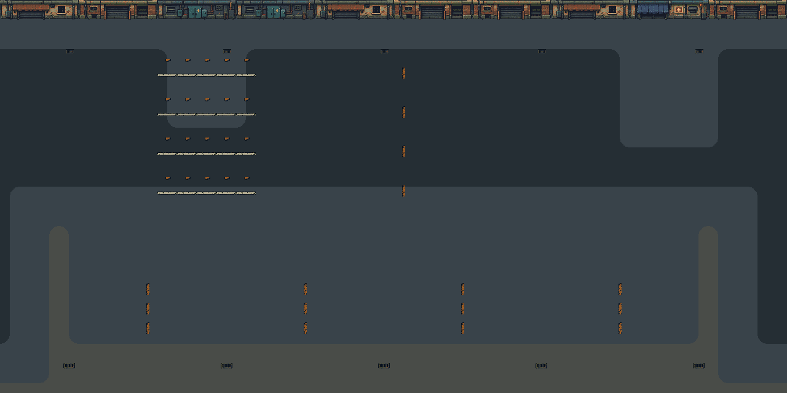
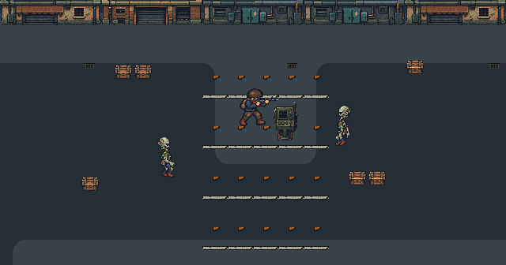
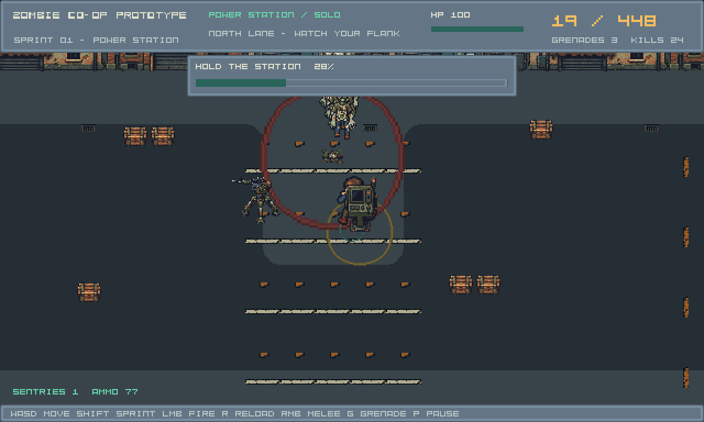
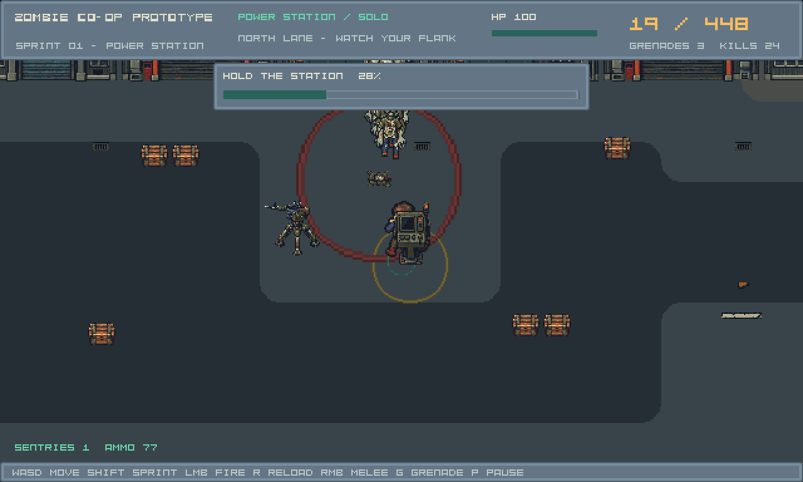

environment.terrain.asphalt_concrete.baseFlat terrain. Native Tiled terrain rotation/flip accepted by exact raster comparison.
Bộ terrain mới: asphalt ↔ concrete ↔ paving. Hai source GPT Image,12 tile nguồn,32 tổ hợp góc theo từng family; concrete là màu chung. Catalog còn ghi rõ48 tile mặt tiền/decal hiện có và cách ghép chúng.
Các tile floor mới ghép sạch trong ma trận đã kiểm. Toàn map chưa hoàn hảo: mặt tiền còn thấp/lặp, biên nam/bên chưa có art ranh giới, nền mới chủ ý phẳng và cần review scrolling/crowd. Floor là mặt phẳng đi được; góc bo không phải curb hay collider. A/B chưa được chọn/default.
Mỗi cạnh đổi vật liệu đúng giữa ô:16px +16px. Cạnh cùng vật liệu phẳng. Asphalt và paving có buffer concrete; chưa có tile tiếp giáp trực tiếp/triple junction. Không dùng metadata để che thiếu artwork.
environment.terrain.asphalt_concrete.baseFlat terrain. Native Tiled terrain rotation/flip accepted by exact raster comparison.
environment.terrain.asphalt_concrete.fillFlat terrain. Native Tiled terrain rotation/flip accepted by exact raster comparison.
environment.terrain.asphalt_concrete.outer_nwFlat terrain. Native Tiled terrain rotation/flip accepted by exact raster comparison.
environment.terrain.asphalt_concrete.edge_nFlat terrain. Native Tiled terrain rotation/flip accepted by exact raster comparison.
environment.terrain.asphalt_concrete.inner_seFlat terrain. Native Tiled terrain rotation/flip accepted by exact raster comparison.
environment.terrain.asphalt_concrete.saddle_nw_seFlat terrain. Native Tiled terrain rotation/flip accepted by exact raster comparison.
environment.terrain.concrete_paving.baseFlat terrain. Native Tiled terrain rotation/flip accepted by exact raster comparison.
environment.terrain.concrete_paving.fillFlat terrain. Native Tiled terrain rotation/flip accepted by exact raster comparison.
environment.terrain.concrete_paving.outer_nwFlat terrain. Native Tiled terrain rotation/flip accepted by exact raster comparison.
environment.terrain.concrete_paving.edge_nFlat terrain. Native Tiled terrain rotation/flip accepted by exact raster comparison.
environment.terrain.concrete_paving.inner_seFlat terrain. Native Tiled terrain rotation/flip accepted by exact raster comparison.
environment.terrain.concrete_paving.saddle_nw_seFlat terrain. Native Tiled terrain rotation/flip accepted by exact raster comparison.
environment.design_round01.street_frontage.0Part of128x32 four-tile facade stamp; place four ordered pieces together, only at accepted boundary footprint. No rotation/flip accepted.
Existing study backdrop. Native facade height and outer-module joins need production visual receipt.environment.design_round01.street_frontage.1Part of128x32 four-tile facade stamp; place four ordered pieces together, only at accepted boundary footprint. No rotation/flip accepted.
Existing study backdrop. Native facade height and outer-module joins need production visual receipt.environment.design_round01.street_frontage.2Part of128x32 four-tile facade stamp; place four ordered pieces together, only at accepted boundary footprint. No rotation/flip accepted.
Existing study backdrop. Native facade height and outer-module joins need production visual receipt.environment.design_round01.street_frontage.3Part of128x32 four-tile facade stamp; place four ordered pieces together, only at accepted boundary footprint. No rotation/flip accepted.
Existing study backdrop. Native facade height and outer-module joins need production visual receipt.environment.design_round01.street_frontage.4Part of128x32 four-tile facade stamp; place four ordered pieces together, only at accepted boundary footprint. No rotation/flip accepted.
Existing study backdrop. Native facade height and outer-module joins need production visual receipt.environment.design_round01.street_frontage.5Part of128x32 four-tile facade stamp; place four ordered pieces together, only at accepted boundary footprint. No rotation/flip accepted.
Existing study backdrop. Native facade height and outer-module joins need production visual receipt.environment.design_round01.street_frontage.6Part of128x32 four-tile facade stamp; place four ordered pieces together, only at accepted boundary footprint. No rotation/flip accepted.
Existing study backdrop. Native facade height and outer-module joins need production visual receipt.environment.design_round01.street_frontage.7Part of128x32 four-tile facade stamp; place four ordered pieces together, only at accepted boundary footprint. No rotation/flip accepted.
Existing study backdrop. Native facade height and outer-module joins need production visual receipt.environment.design_round01.street_frontage.8Part of128x32 four-tile facade stamp; place four ordered pieces together, only at accepted boundary footprint. No rotation/flip accepted.
Existing study backdrop. Native facade height and outer-module joins need production visual receipt.environment.design_round01.street_frontage.9Part of128x32 four-tile facade stamp; place four ordered pieces together, only at accepted boundary footprint. No rotation/flip accepted.
Existing study backdrop. Native facade height and outer-module joins need production visual receipt.environment.design_round01.street_frontage.10Part of128x32 four-tile facade stamp; place four ordered pieces together, only at accepted boundary footprint. No rotation/flip accepted.
Existing study backdrop. Native facade height and outer-module joins need production visual receipt.environment.design_round01.street_frontage.11Part of128x32 four-tile facade stamp; place four ordered pieces together, only at accepted boundary footprint. No rotation/flip accepted.
Existing study backdrop. Native facade height and outer-module joins need production visual receipt.environment.design_round01.street_frontage.12Part of128x32 four-tile facade stamp; place four ordered pieces together, only at accepted boundary footprint. No rotation/flip accepted.
Existing study backdrop. Native facade height and outer-module joins need production visual receipt.environment.design_round01.street_frontage.13Part of128x32 four-tile facade stamp; place four ordered pieces together, only at accepted boundary footprint. No rotation/flip accepted.
Existing study backdrop. Native facade height and outer-module joins need production visual receipt.environment.design_round01.street_frontage.14Part of128x32 four-tile facade stamp; place four ordered pieces together, only at accepted boundary footprint. No rotation/flip accepted.
Existing study backdrop. Native facade height and outer-module joins need production visual receipt.environment.design_round01.street_frontage.15Part of128x32 four-tile facade stamp; place four ordered pieces together, only at accepted boundary footprint. No rotation/flip accepted.
Existing study backdrop. Native facade height and outer-module joins need production visual receipt.environment.design_round01.yard_frontage.0Part of128x32 four-tile facade stamp; place four ordered pieces together, only at accepted boundary footprint. No rotation/flip accepted.
Existing study backdrop. Native facade height and outer-module joins need production visual receipt.environment.design_round01.yard_frontage.1Part of128x32 four-tile facade stamp; place four ordered pieces together, only at accepted boundary footprint. No rotation/flip accepted.
Existing study backdrop. Native facade height and outer-module joins need production visual receipt.environment.design_round01.yard_frontage.2Part of128x32 four-tile facade stamp; place four ordered pieces together, only at accepted boundary footprint. No rotation/flip accepted.
Existing study backdrop. Native facade height and outer-module joins need production visual receipt.environment.design_round01.yard_frontage.3Part of128x32 four-tile facade stamp; place four ordered pieces together, only at accepted boundary footprint. No rotation/flip accepted.
Existing study backdrop. Native facade height and outer-module joins need production visual receipt.environment.design_round01.yard_frontage.4Part of128x32 four-tile facade stamp; place four ordered pieces together, only at accepted boundary footprint. No rotation/flip accepted.
Existing study backdrop. Native facade height and outer-module joins need production visual receipt.environment.design_round01.yard_frontage.5Part of128x32 four-tile facade stamp; place four ordered pieces together, only at accepted boundary footprint. No rotation/flip accepted.
Existing study backdrop. Native facade height and outer-module joins need production visual receipt.environment.design_round01.yard_frontage.6Part of128x32 four-tile facade stamp; place four ordered pieces together, only at accepted boundary footprint. No rotation/flip accepted.
Existing study backdrop. Native facade height and outer-module joins need production visual receipt.environment.design_round01.yard_frontage.7Part of128x32 four-tile facade stamp; place four ordered pieces together, only at accepted boundary footprint. No rotation/flip accepted.
Existing study backdrop. Native facade height and outer-module joins need production visual receipt.environment.design_round01.yard_frontage.8Part of128x32 four-tile facade stamp; place four ordered pieces together, only at accepted boundary footprint. No rotation/flip accepted.
Existing study backdrop. Native facade height and outer-module joins need production visual receipt.environment.design_round01.yard_frontage.9Part of128x32 four-tile facade stamp; place four ordered pieces together, only at accepted boundary footprint. No rotation/flip accepted.
Existing study backdrop. Native facade height and outer-module joins need production visual receipt.environment.design_round01.yard_frontage.10Part of128x32 four-tile facade stamp; place four ordered pieces together, only at accepted boundary footprint. No rotation/flip accepted.
Existing study backdrop. Native facade height and outer-module joins need production visual receipt.environment.design_round01.yard_frontage.11Part of128x32 four-tile facade stamp; place four ordered pieces together, only at accepted boundary footprint. No rotation/flip accepted.
Existing study backdrop. Native facade height and outer-module joins need production visual receipt.environment.design_round01.yard_frontage.12Part of128x32 four-tile facade stamp; place four ordered pieces together, only at accepted boundary footprint. No rotation/flip accepted.
Existing study backdrop. Native facade height and outer-module joins need production visual receipt.environment.design_round01.yard_frontage.13Part of128x32 four-tile facade stamp; place four ordered pieces together, only at accepted boundary footprint. No rotation/flip accepted.
Existing study backdrop. Native facade height and outer-module joins need production visual receipt.environment.design_round01.yard_frontage.14Part of128x32 four-tile facade stamp; place four ordered pieces together, only at accepted boundary footprint. No rotation/flip accepted.
Existing study backdrop. Native facade height and outer-module joins need production visual receipt.environment.design_round01.yard_frontage.15Part of128x32 four-tile facade stamp; place four ordered pieces together, only at accepted boundary footprint. No rotation/flip accepted.
Existing study backdrop. Native facade height and outer-module joins need production visual receipt.environment.urban.road_dash_01Existing authored transparent flush decal; no collision. Preserve authored marking direction.
environment.urban.road_dash_02Existing authored transparent flush decal; no collision. Preserve authored marking direction.
environment.urban.road_dash_03Existing authored transparent flush decal; no collision. Preserve authored marking direction.
environment.urban.road_dash_04Existing authored transparent flush decal; no collision. Preserve authored marking direction.
environment.urban.crossing_01Existing authored transparent flush decal; no collision. Preserve authored marking direction.
environment.urban.crossing_02Existing authored transparent flush decal; no collision. Preserve authored marking direction.
environment.urban.crossing_03Existing authored transparent flush decal; no collision. Preserve authored marking direction.
environment.urban.crossing_04Existing authored transparent flush decal; no collision. Preserve authored marking direction.
environment.urban.drain_smallExisting authored transparent flush decal; no collision. Preserve authored marking direction.
environment.urban.drain_largeExisting authored transparent flush decal; no collision. Preserve authored marking direction.
environment.urban.manholeExisting authored transparent flush decal; no collision. Preserve authored marking direction.
environment.urban.paper_scatterExisting authored transparent flush decal; no collision. Preserve authored marking direction.
environment.urban.weedsExisting authored transparent flush decal; no collision. Preserve authored marking direction.
environment.urban.gravelExisting authored transparent flush decal; no collision. Preserve authored marking direction.
environment.urban.litter_pairExisting authored transparent flush decal; no collision. Preserve authored marking direction.
environment.urban.hairline_crackExisting authored transparent flush decal; no collision. Preserve authored marking direction.
A = asphalt, C = concrete, P = paving. Mask: NW1, NE2, SE4, SW8. Mỗi source có tên base/fill/outer NW/edge north/inner SE/saddle NW–SE. H/V/diagonal flags reuse pixel source qua Tiled và renderer hiện có.
NW:A NE:A SE:A SW:Asource ID 0 · GID 1NW:C NE:A SE:A SW:Asource ID 2 · GID 3NW:A NE:C SE:A SW:Asource ID 2 · GID 2147483651NW:C NE:C SE:A SW:Asource ID 3 · GID 4NW:A NE:A SE:C SW:Asource ID 2 · GID 3221225475NW:C NE:A SE:C SW:Asource ID 5 · GID 6NW:A NE:C SE:C SW:Asource ID 3 · GID 2684354564NW:C NE:C SE:C SW:Asource ID 4 · GID 2147483653NW:A NE:A SE:A SW:Csource ID 2 · GID 1073741827NW:C NE:A SE:A SW:Csource ID 3 · GID 536870916NW:A NE:C SE:A SW:Csource ID 5 · GID 2147483654NW:C NE:C SE:A SW:Csource ID 4 · GID 5NW:A NE:A SE:C SW:Csource ID 3 · GID 1073741828NW:C NE:A SE:C SW:Csource ID 4 · GID 1073741829NW:A NE:C SE:C SW:Csource ID 4 · GID 3221225477NW:C NE:C SE:C SW:Csource ID 1 · GID 2NW:C NE:C SE:C SW:Csource ID 6 · GID 7NW:P NE:C SE:C SW:Csource ID 8 · GID 9NW:C NE:P SE:C SW:Csource ID 8 · GID 2147483657NW:P NE:P SE:C SW:Csource ID 9 · GID 10NW:C NE:C SE:P SW:Csource ID 8 · GID 3221225481NW:P NE:C SE:P SW:Csource ID 11 · GID 12NW:C NE:P SE:P SW:Csource ID 9 · GID 2684354570NW:P NE:P SE:P SW:Csource ID 10 · GID 2147483659NW:C NE:C SE:C SW:Psource ID 8 · GID 1073741833NW:P NE:C SE:C SW:Psource ID 9 · GID 536870922NW:C NE:P SE:C SW:Psource ID 11 · GID 2147483660NW:P NE:P SE:C SW:Psource ID 10 · GID 11NW:C NE:C SE:P SW:Psource ID 9 · GID 1073741834NW:P NE:C SE:P SW:Psource ID 10 · GID 1073741835NW:C NE:P SE:P SW:Psource ID 10 · GID 3221225483NW:P NE:P SE:P SW:Psource ID 7 · GID 8Native TSJ có Shared floor terrain set và hai pair-specific sets. Chỉ terrain phẳng có phép xoay/flip; các piece mặt tiền phải ghép đủ bốn tile theo thứ tự. Roundtrip5 TMJ giữ nguyên GIDs. Chưa quay thao tác Terrain Brush UI.
terrain.tsj · edge/corner contract



Marker/Collision và tỷ lệ actor giữ nguyên.132/56 vertex paving ở A/B chuyển sang concrete để có buffer thật trước asphalt; chỉ chỉnh bề mặt phẳng, không đổi gameplay. Actor view là composition tĩnh qua cached resources; encounter smoke riêng dưới.


powershell -NoProfile -ExecutionPolicy Bypass -File tools/assets/export_palette_tiles.ps1 build/tools/tiled/native/SourceDir/PFiles/Tiled/tmxrasterizer.exe --no-smoothing --hide-object-layers content/maps/tile_review/adjacency.tmj build/environment_tile_review/adjacency.png build/environment_tile_review/TileRoundProbe.exe content/maps/tile_review/resource_compare.json powershell -NoProfile -ExecutionPolicy Bypass -File build/environment_tile_review/CheckTiles.ps1 powershell -NoProfile -ExecutionPolicy Bypass -File build/environment_tile_review/CheckTiledConsumer.ps1